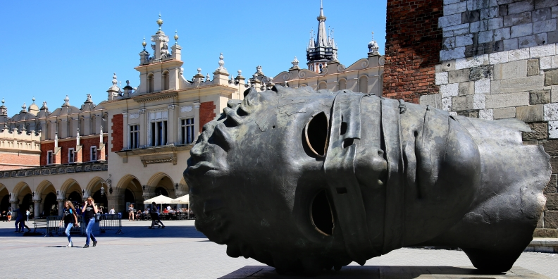

Widoki
Poznaj Kraków
Miasto
 W Krakowie znajdują się 43 parki, które łącznie zajmują ok. 397 ha[32], co stanowi nieco ponad 1% całkowitej powierzchni miasta. W Krakowie jest 5 rezerwatów
przyrody o łącznej powierzchni 48,6 ha (0,15% powierzchni miasta)[33]. Na obszarze miasta Krakowa znajdują się niewielkie zielone obszary wchodzące w skład Zespołu Jurajskich Parków Krajobrazowych. Zespół ten zajmuje się ochroną
terenów Jury Krakowsko-Częstochowskiej m.in. fragmenty parku Bielańsko-Tynieckiego, Tenczyńskiego oraz Dolinek Krakowskich, wraz z ich otulinami. Ponadto ostoja przyrodnicza Jury Krakowsko-Częstochowskiej wchodzi w skład programu
CORINE biotopes ze względu na swoją florę, faunę, geomorfologię i krajobraz. Zachodnia część Krakowa stanowi tzw. Obszar Krakowski i podlega polskiej sieci ekologicznej, a część obszaru miasta usytuowana jest w zasięgu korytarza
ekologicznego rzeki Wisły. Rzeki, ich doliny oraz zbiorniki wodne to jedne z najciekawszych z przyrodniczego punktu widzenia miejsc w Krakowie. W południowej części stoków wzgórz wapiennych oferują one warunki do rozwoju roślinności
ciepłolubnej muraw i zarośli kserotermicznych.
W Krakowie znajdują się 43 parki, które łącznie zajmują ok. 397 ha[32], co stanowi nieco ponad 1% całkowitej powierzchni miasta. W Krakowie jest 5 rezerwatów
przyrody o łącznej powierzchni 48,6 ha (0,15% powierzchni miasta)[33]. Na obszarze miasta Krakowa znajdują się niewielkie zielone obszary wchodzące w skład Zespołu Jurajskich Parków Krajobrazowych. Zespół ten zajmuje się ochroną
terenów Jury Krakowsko-Częstochowskiej m.in. fragmenty parku Bielańsko-Tynieckiego, Tenczyńskiego oraz Dolinek Krakowskich, wraz z ich otulinami. Ponadto ostoja przyrodnicza Jury Krakowsko-Częstochowskiej wchodzi w skład programu
CORINE biotopes ze względu na swoją florę, faunę, geomorfologię i krajobraz. Zachodnia część Krakowa stanowi tzw. Obszar Krakowski i podlega polskiej sieci ekologicznej, a część obszaru miasta usytuowana jest w zasięgu korytarza
ekologicznego rzeki Wisły. Rzeki, ich doliny oraz zbiorniki wodne to jedne z najciekawszych z przyrodniczego punktu widzenia miejsc w Krakowie. W południowej części stoków wzgórz wapiennych oferują one warunki do rozwoju roślinności
ciepłolubnej muraw i zarośli kserotermicznych.
Położenie geograficzne utrudnia wentylację miasta, przez co spowija je smog, szczególnie w sezonie grzewczym. Kraków znajduje się w czołówce rankingu europejskich
miast z najbardziej zanieczyszczonym powietrzem. Krakowskie powietrze zanieczyszczone jest przede wszystkim pyłem PM10 i PM2,5 oraz toksycznym benzo(a)pirenem. Skutkiem zanieczyszczenia pyłem, poza oczywistymi konsekwencjami
zdrowotnymi, jest zauważalne zmniejszenie przejrzystości powietrza w mieście[38]. Źródłem zanieczyszczeń są przede wszystkim piece na paliwa stałe (34%) i napływ pyłu spoza miasta (36%), ale także przemysł lokalny (17%) oraz
samochody (13%)[39]. Piece grzewcze odpowiadają także za 68 proc. emisji rakotwórczego benzo(a)pirenu, którego – jak wynika z wyliczeń Krakowskiego Alarmu Smogowego – wdychana przez krakowian ilość w ciągu roku jest taka sama,
jak w przypadku wypalenia ok. 2500 papierosów[40].